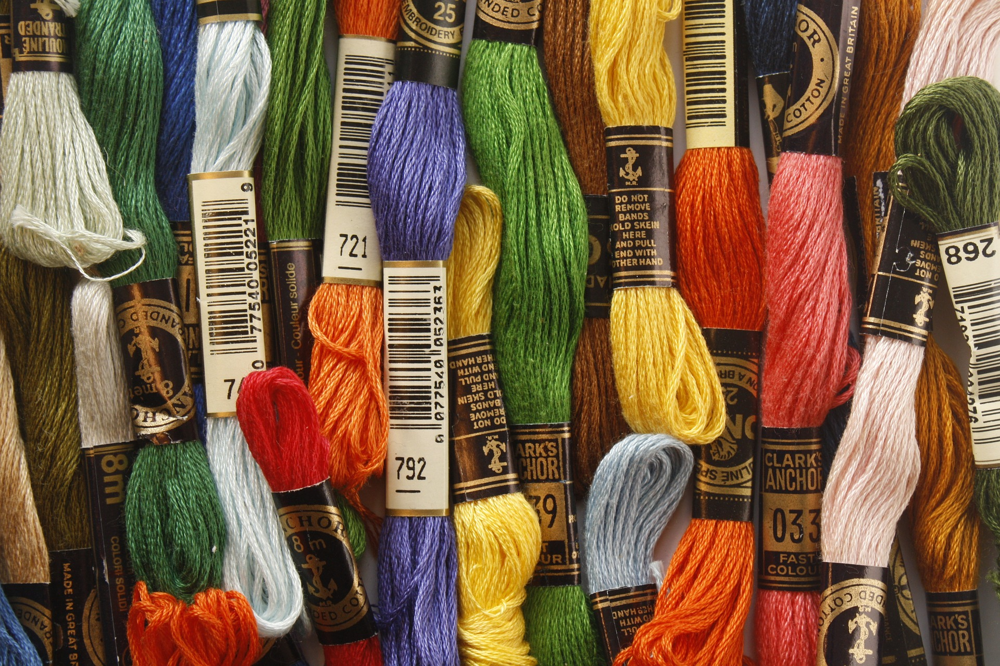

Cross Stitch Materials
Information on Important Materials
Thread & Needles
 I have these first as there is a lot to consider in this category. Threads can come in varying colours and quality. Some are colorfast and some of the colours run when exposed to moisture. You should consider what brand you are going to use (DMC/Anchor) as there may be an issue later on with colour coding. You most consider how much you need of a single colour and how long a piece of thread you should start with. Thread coverage can differ between the amount of threads used in a stitch and the count size of the cross stitch material. (Note. The lower the count size, the larger the squares and the thicker the thread needs to be to get decent coverage.)
Threads can be bought on amazon.com or on ebay.com easily. There are many variations in brand names but try out a few and see how you like the feel and look.
Needles need to be slightly thick and strong without making too large a hole in your material. A needle that is prone to tarnishing may ruin a design you are working on. Keep this in mind when purchasing.
Hoops

Cross stitch hoops come in various sizes and are used to keep the material you are working on taut and more managable. They are ususally wooden or plastic and can make life a whole lot easier when stitching!
Cross Stitch Material
The material you work on can come in many colours (although cream and white are most popular) and is made up of small squares made up of certain 'counts'. These counts determine the size of the squares. The smaller the count, the larger the square. An 11 count material can be quite large for some. I would recommend starting with a 14 count as many designs online use this as a basis. 18 count is quite small but still managable with designs. If you would rather to go smaller andmore instricate then 18 count be the one for you.
You are not stuck with the basic cross stitch material. Any material can be stitched. A favourite amoung stitchers is jute. Try and experiment and see ehat you like. Be warned though, when you move away from the tidy squares of the 14 count, it becomes a lot more difficult to plot out a design to stitch!
Sewing Scissors
A small sewing scissors is all that is needed to trim your threads. Any scissors coud be used but its nice to have a small and handy scissors that can fit in a sewing box or your cross stitch storage.
Storage


It is necessary to find a safe place to store your materials. It can be anything from an empty shoe box or biscuit tin to a dedicated plastic container so long as it keeps your materials tidy and organised. One such example is a tidy box I bought for myself. It is from the ReallyUsefulBox brand and it keeps all my threads and materials organised! As mentioned already, suh an expense is not necessary but just a luxury. I would suggest however if you want to get serious with your stitching to invest in something similar.

As well as having my materials in the one box, I bought little craft bags of varying sizes to contain my threads that are of a similiar hue. This keeps them nice and tidy and easy to find!